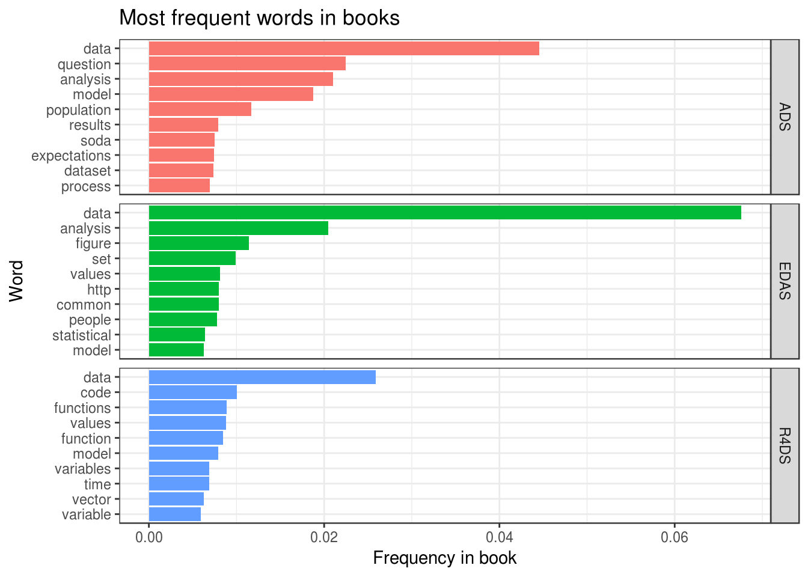
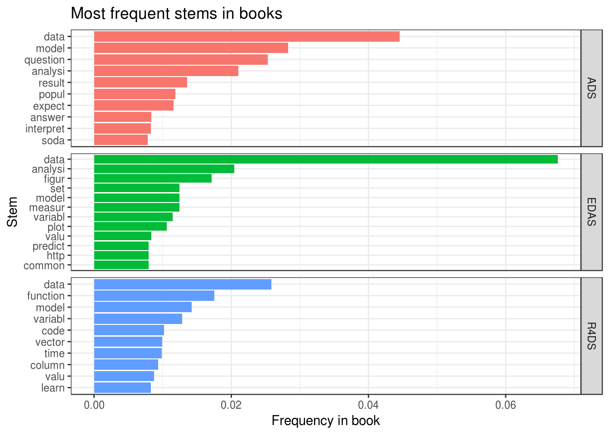

How to Scrape Pdf and Rmd to Get Inspiration
Prologue
This post is a story about how I came up with an idea of QuestionFlow name by performing text analysis. Beware of a lot of code.
Introduction
My name is Evgeni and I am a mathematician with strong passion for data analysis and R.
The first experience in the field came to me in the early 2013, in the middle of my university graduate year. I decided to take a “Data Analysis” course at Coursera (taught by amazing Jeff Leek) which later transformed into Data Science Specialization from John Hopkins University. After watching some videos, it came to me that knowledge of some weird programming language called R is needed in order to complete the course. That insight led me to another Coursera course “Computing for Data Analysis” (offered by no less amazing Roger D. Peng). Thanks to them, I fell in love with data analysis and R, which really helped me to get a wonderful job as mathematician-analyst after graduation.
Years went by until autumn 2016 (about a year ago), when I suddenly discovered the R for Data Science book and other works by Hadley Wickham. At the time I had heard only about ggplot2 but nothing more, as base R was pretty enough for my work. After this discovery I fell into a rabbit hole: tidyverse, R Markdown, reproducible research, writing R packages and so on. Finally, after blogdown reached CRAN, I realized that it is time to give back to the great R community by being more web present. Basically it means creating and maintaining own blog/site.
Goal
Being perfectionist, I spent quite some time figuring out the name of my future site. In ideal world it should have the next features:
- Be representative of the site content.
- Be memorable to audience. In general it means to have a pleasant pronunciation, to be quite short and to evoke colourful images in people’s minds.
- Be available as domain name and twitter account.
I had some possible versions of the name, but none of them actually felt right. Eventually, I came up with an idea of giving tribute to three persons mentioned above for sharing their knowledge with the world (and me in particular). The goal was to take one book authored by each of them and perform some text analysis in order to get inspiration. This also felt like a good opportunity to try tidytext package.
Next books were chosen (which had big influence on me):
- The Elements of Data Analytic Style (EDAS) by Jeff Leek.
- The Art of Data Science (ADS) by Roger D. Peng and Elizabeth Matsui.
- R for Data Science (R4DS) by Garrett Grolemund and Hadley Wickham.
I highly recommend everybody interested in data analysis to read these books. All of them can be obtained for free (but I strongly encourage to reward authors): EDAS and ADS as pdf files, R4DS as bookdown repository from Hadley’s github.
Data preparation
The goal is to transform all books into tidy text format with words as tokens for further analysis. Results and full code of data preparation can be found in my jeroha (JEff-ROger-HAdley) repository.
For following data preparation code to work the next packages are needed to be installed: pdftools, dplyr, tidytext, stringr. However loaded should be only two of them:
library(dplyr, warn.conflicts = FALSE, quietly = TRUE)
library(stringr, warn.conflicts = FALSE, quietly = TRUE)Tidy pdf
Here is the code of function for tidying pdf file at the file path. At first, it, with help of pdftools package, converts pdf file into list of strings (text per page). Then this list is converted into tibble with the following structure:
- page <int> : Word’s page number.
- line <int> : Word’s line number on page (empty lines are ignored).
- word <chr> : Word.
tidy_pdf <- function(file) {
pages_list <- file %>%
pdftools::pdf_text() %>%
lapply(. %>% strsplit("\n") %>% `[[`(1))
lapply(seq_along(pages_list), function(i) {
page_lines <- pages_list[[i]]
n_lines <- length(page_lines)
tibble(
page = rep(i, n_lines),
line = seq_len(n_lines),
text = page_lines
) %>%
tidytext::unnest_tokens(word, text, token = "words")
}) %>%
bind_rows()
}This function is enough to scrape text from both EDAS and ADS.
Tidy Rmd
The R4DS book can be obtained as a collection of Rmd files. The goal is to extract text, not code or metadata. Unfortunately, I didn’t find an easy way to do that with knitr or rmarkdown, so I wrote function myself. The tidy_rmd() reads file line by line at location file and collapses them into one string. After that, with some magic of regular expressions and str_replace_all() from stringr, it removes YAML header, code and LaTeX blocks. Note that this function is designed to only handle Rmd files with relatively simple formatting and can return undesirable output in some edge cases.
The output is a tibble with the following structure:
- name <int> : Document name which is given as function argument. Default is file’s base name without extension.
- word <chr> : Word.
tidy_rmd <- function(file, name = file_base_name(file)) {
file_string <- file %>%
readLines() %>%
paste0(collapse = " ") %>%
# Remove YAML header
str_replace_all("^--- .*?--- ", "") %>%
# Remove code
str_replace_all("```.*?```", "") %>%
str_replace_all("`.*?`", "") %>%
# Remove LaTeX
str_replace_all("[^\\\\]\\$\\$.*?[^\\\\]\\$\\$", "") %>%
str_replace_all("[^\\\\]\\$.*?[^\\\\]\\$", "")
tibble(name = name, text = file_string) %>%
tidytext::unnest_tokens(word, text, token = "words")
}
file_base_name <- function(file) {
file %>%
basename() %>%
str_replace_all("\\..*?$", "")
}Filter good words
Only meaningful words should be used in text analysis. They are:
- Not stop words.
tidytextpackage has a data framestop_wordswith the most common stop words. - Words that contain only alphabetic characters. This feature is, of course, arguable. I decided to add it because otherwise data can contain some links and words with ' : “we’ll”, “word’s” etc. Moreover, this is not very strict project, so I think it is appropriate decision.
Words scraped from Rmd files should be processed a little more carefully: they can contain emphasis characters “_” and “*” at the beginning or end. So, before filtering good words, these symbols should be removed.
remove_md_emphasis <- function(x) {
str_replace_all(x, "^[_*]+|[_*]+$", "")
}
filter_good_words <- function(word_tbl) {
word_tbl %>%
anti_join(tidytext::stop_words, by = "word") %>%
filter(str_detect(word, pattern = "^[[:alpha:]]+$"))
}filter_good_words() should be applied to data frames with character column word.
Scrape books
JHU pdf files
prepare_book <- function(book_name) {
# File should be in the data-raw folder of working directory
file.path("data-raw", paste0(book_name, ".pdf")) %>%
tidy_pdf() %>%
filter_good_words() %>%
mutate(
id = seq_len(n()),
book = rep(book_name, n())
) %>%
select(id, book, everything())
}
edas <- prepare_book("EDAS")
ads <- prepare_book("ADS")edas and ads have the following structure:
- id <int> : Index of word inside the book.
- book <chr> : Name of the book.
- page, line, word : the same as in
tidy_pdf()output.
R4DS bookdown folder
In order to obtain whole R4DS book as one tibble, one should apply tidy_rmd() to all Rmd files listed in ’_bookdown.yml’ file and bind results with dplyr::bind_rows(). This also ensures that words are arranged in the order according to their appearance in the book.
# Get file names used to knit the book
# r4ds folder should be in the data-raw folder of working directory
r4ds_file_names <- readLines(file.path("data-raw", "r4ds", "_bookdown.yml")) %>%
paste0(collapse = " ") %>%
str_extract_all('\\".*\\.[Rr]md\\"') %>%
`[[`(1) %>%
str_replace_all('"', '') %>%
str_split(",[:space:]*") %>%
`[[`(1)
# Orginize book data into tibble
r4ds_pages <- tibble(
page = seq_len(length(r4ds_file_names)),
file = r4ds_file_names,
pageName = file_base_name(r4ds_file_names)
)
# Scrape book
r4ds <- file.path("data-raw", "r4ds", r4ds_pages[["file"]]) %>%
lapply(tidy_rmd) %>%
bind_rows() %>%
rename(pageName = name) %>%
# Remove md emphasis before filtering words with only alphabetic characters
mutate(word = remove_md_emphasis(word)) %>%
filter_good_words() %>%
mutate(
id = seq_len(n()),
book = rep("R4DS", n())
) %>%
left_join(y = r4ds_pages %>% select(page, pageName),
by = "pageName") %>%
select(id, book, page, pageName, word)Due to html format of r4ds, one file represents both chapter and page. For consistency with edas and ads, name ‘page’ was chosen. With this, r4ds has the same structure as JHU pdf books but column line is replaced with pageName (the name chapter/page file).
Exploration
At first, we should prepare tibble of all books combined.
select_book_cols <- . %>% select(id, book, page, word)
books <- bind_rows(
ads %>% select_book_cols(),
edas %>% select_book_cols(),
r4ds %>% select_book_cols()
)The most obvious question to ask is what are the most frequent words in each book. For reasons which will become obvious a little bit later, let’s define functions for data preparation and plotting:
library(ggplot2)
compute_word_freq <- . %>%
group_by(book, word) %>%
summarise(n = n()) %>%
mutate(freq = n / sum(n)) %>%
ungroup()
plot_freq_words <- function(tbl, n = 10) {
tbl %>%
group_by(book) %>%
top_n(n = n, wt = freq) %>%
ungroup() %>%
arrange(book, freq) %>%
# Little hack to plot word frequences in descending order with facetting
mutate(
label = paste0(book, "_", word),
label = factor(label, levels = label)
) %>%
ggplot(aes(label, freq, fill = book)) +
geom_col() +
facet_grid(book ~ ., scales = "free") +
# Remove book prefix for appropriate labels
scale_x_discrete(labels = function(x) {gsub("^.*_", "", x)}) +
scale_fill_discrete(guide = FALSE) +
coord_flip() +
theme_bw() +
theme(panel.grid.minor.y = element_blank())
}Plot of word frequencies looks as follows:
books %>%
compute_word_freq() %>%
plot_freq_words() +
labs(title = "Most frequent words in books",
x = "Word", y = "Frequency in book")
Some thoughts about this plot:
- As expected, words like “data” and “analysis” are among the most frequent ones.
- Word “soda” in ADS is quite frequent. This is because many examples were constructed using research of soda industry.
- Word “question” is the second most popular among all words. Indeed, the narrative of “The Art of Data Science” is centered around concept of “question”: what is a good one, how it should be used and so on.
Fortunately, at this point something clicked in my mind. During the testing of tidy_rmd() I saw word ‘workflow’ among others in R4DS, which weirdly stuck in my head. Combined with new knowledge about ‘question’, I realized that my preferred way of doing data analysis can be described as “ask appropriate question and answer it using R workflow”. In my opinion, the result QuestionFlow satisfied all conditions of a good site name stated in Goal.
However, the exploration of the most frequent words doesn’t feel as completed at this point. The reason is presence of similar words, like ‘functions’ and ‘function’, among most frequent. To eliminate this, let’s extract from words their stem. This is easily done with package tokenizers:
books %>%
mutate(word = unlist(tokenizers::tokenize_word_stems(word))) %>%
compute_word_freq() %>%
plot_freq_words() +
labs(title = "Most frequent stems in books",
x = "Stem", y = "Frequency in book")
We see several important changes:
- Stem “model” showed considerable growth in frequency compared to word “model”. The reason is a rather frequent use of words “models” (as plural and as verb), “modeling” (in ADS and EDAS) and “modelling” (in R4DS).
- Stems “function” and “variabl” are as twice more frequent as words “function” and “variable” due to frequent use of “functions” and “variables” respectively.
Conclusions
- Using text analysis for inspiration can lead to desired result.
- Doing code testing can help to get some clicks in researcher’s head.
- Using examples from one research area can lead to “interesting” discoveries during text analysis of the book.
- Word
QuestionFlowsatisfied all conditions of a good site name (at the time of exploration). - Analyzing stems instead of words can lead to significantly different insights.
#> Platform: x86_64-pc-linux-gnu (64-bit)
#> Running under: Ubuntu 16.04.3 LTS
#>
#> Matrix products: default
#> BLAS: /usr/lib/libblas/libblas.so.3.6.0
#> LAPACK: /usr/lib/lapack/liblapack.so.3.6.0
#>
#> locale:
#> [1] LC_CTYPE=ru_UA.UTF-8 LC_NUMERIC=C
#> [3] LC_TIME=ru_UA.UTF-8 LC_COLLATE=ru_UA.UTF-8
#> [5] LC_MONETARY=ru_UA.UTF-8 LC_MESSAGES=ru_UA.UTF-8
#> [7] LC_PAPER=ru_UA.UTF-8 LC_NAME=C
#> [9] LC_ADDRESS=C LC_TELEPHONE=C
#> [11] LC_MEASUREMENT=ru_UA.UTF-8 LC_IDENTIFICATION=C
#>
#> attached base packages:
#> [1] methods stats graphics grDevices utils datasets base
#>
#> other attached packages:
#> [1] bindrcpp_0.2 ggplot2_2.2.1 stringr_1.2.0 dplyr_0.7.3 jeroha_0.1.0
#>
#> loaded via a namespace (and not attached):
#> [1] Rcpp_0.12.12 knitr_1.17 bindr_0.1 magrittr_1.5
#> [5] munsell_0.4.3 colorspace_1.3-2 R6_2.2.2 rlang_0.1.2.9000
#> [9] plyr_1.8.4 tools_3.4.2 grid_3.4.2 gtable_0.2.0
#> [13] htmltools_0.3.6 lazyeval_0.2.0 yaml_2.1.14 rprojroot_1.2
#> [17] digest_0.6.12 assertthat_0.2.0 tibble_1.3.4 bookdown_0.5
#> [21] reshape2_1.4.2 SnowballC_0.5.1 tokenizers_0.1.4 glue_1.1.1
#> [25] evaluate_0.10.1 rmarkdown_1.6 blogdown_0.1 labeling_0.3
#> [29] stringi_1.1.5 compiler_3.4.2 scales_0.5.0 backports_1.1.0
#> [33] pkgconfig_2.0.1